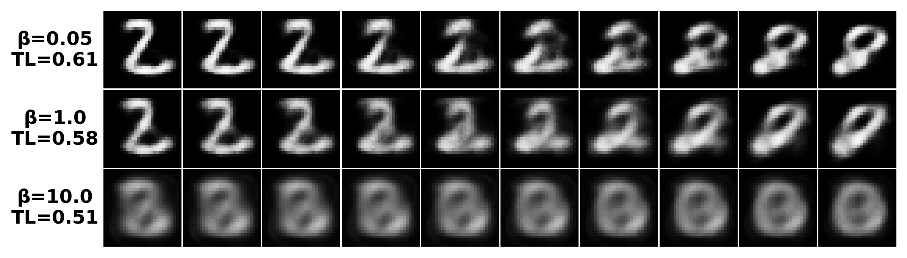

1Korea University 2UC San Diego 3MIT & Broad Institute
TL;DR Gradient descent updates weights, but the weight Gram matrix \(W^\top W\) records how the features would like to move. Following that motion shows deep networks straightening their data toward the target, one layer at a time.
Training changes weights. Now imagine a side experiment. Take an input \(x\), and at every training step nudge a copy of it along the loss gradient, in the direction the loss would like the input to move:
\[ \tilde x_{t+1} = \tilde x_t - \gamma\, \nabla_{x} L_t, \qquad \tilde x_0 = x. \]We call \(\tilde x_t\) the virtual update. It never feeds back into training. It is just a record of where gradient descent is pushing the features. Below, a small MLP learns to predict each point's position along a Swiss roll (shown as color). Press play and watch the record.
The animation raises two questions, and the rest of this page answers them in order. First, gradient descent only touches weights, so does it really carry this feature-space motion? Second, where does the motion lead?
Most theories of training dynamics are weight-centric: they ask how far the weights move, as in NTK or mean-field analyses. We ask instead how the features move. The bridge between the two views takes one line. For any layer \(z = Wh\) and any scalar function \(f(z)\), the chain rule gives two gradients:
An exact identity, with no approximation. The two sides meet through \(W^\top\).
Apply one gradient-descent step to \(W\), and look at the Gram matrix \(W^\top W\) rather than at \(W\) itself. The Feature Learning Equation shows up inside the expansion:
\[ \begin{aligned} (W - \gamma \nabla_W L)^\top (W - \gamma \nabla_W L) &= W^\top W - \gamma\big(\htmlClass{wx}{W^\top \nabla_W L} + \nabla_W L^\top W\big) + O(\gamma^2) \\ &= W^\top W - \gamma\big(\htmlClass{fx}{\nabla_h L\, h^\top} + h\, \nabla_h L^\top\big) + O(\gamma^2). \end{aligned} \]The right-hand side contains no weight gradients, only feature gradients. It is also exactly how the covariance \(hh^\top\) changes when \(h\) takes one virtual step \(h \to h - \gamma \nabla_h L\).
The weight Gram matrix learns the Virtual Covariance.
Every gradient step shifts \(W^\top W\) by the same amount that the covariance of the virtually updated features shifts. Gradient descent never moves features directly, yet the Gram matrix carries a record of where they were being pushed.
You can check this on the toy problem above. We take the first-layer weights of the Swiss-roll network and compare their actual Gram shift with the covariance shift of the virtual inputs, at the true learning rate and with no rescaling:
Does the Gram matrix carry the learning signal? If it does, we should be able to discard every part of the gradient that leaves \(W^\top W\) unchanged and lose little. We do exactly that. We project out the Gram-preserving component and train with only the Gram-changing part, the whitened gradient.
The virtual update is hypothetical. In real training the weights change, and the features move only as a consequence. If the two disagreed, a layer would be learning to expect inputs that the previous layer never produces. Two propositions show that they agree.
Same sign, never larger. Each unit's actual change points the same way as its virtual change and stays inside it. In fact, the actual change is the virtual one scaled by roughly \(\sigma'(z)^2 \le 1\).
Never against it. When every layer trains together under gradient flow, the real feature velocity is the virtual update reshaped by a positive semi-definite matrix \(M_l\), so it always stays within 90° of the virtual direction.
Prop. 1. If \(\sigma\) is \(L\)-Lipschitz, \(\|h_{l-1}\|_2 = 1\), and only \(W_{l-1}\) takes one GD step on that sample, then element-wise \(|\sigma(W^+_{l-1}h_{l-1}) - \sigma(W_{l-1}h_{l-1})| \le L^2\, |h_l^+ - h_l|\). If \(\sigma\) is monotone, the signs agree as well.
Prop. 2. Under gradient flow on all layers, \[ \frac{dh_l}{dt} = -M_l\,\nabla_{h_l} L, \qquad M_l = \sum_{l'=1}^{l} \|h_{l'-1}\|_2^2\, J_{l\leftarrow l'} J_{l\leftarrow l'}^\top \succeq 0, \] with \(J_{l\leftarrow l'} = \partial h_l/\partial z_{l'}\). Hence \(\langle \tfrac{dh_l}{dt}, -\nabla_{h_l}L\rangle \ge 0\).
To get from how features move to where they end up, we need to compare a network's behavior at different data points. The tool we use is the simplest one available: a first-order Taylor expansion between pairs of training points,
\[ f(x_i) \;\approx\; f(x_j) + (x_i - x_j)^\top \nabla f(x_j). \]For a deep network this is a bold move, because for any single pair the error can be large. But the quantities we analyze are sums over all pairs of training points, and in that sum the errors behave very differently.
Summed over all pairs, the first-order errors cancel exactly.
Suppose \(f\) is positively homogeneous (for example, a bias-free ReLU network) and both the inputs and the outputs are centered. Then the \(N^2\) pairwise Taylor errors add up to zero, however large each one is.
The idea in one line: summed over pairs, the \(f(x_i) - f(x_j)\) terms cancel, centering removes the \(x_i\) terms, and homogeneity turns what remains into \(m\sum_j f(x_j) = 0\). The proposition assumes exact homogeneity, but in practice the cancellation survives much more. For GELU networks, which are not homogeneous, the aggregate error stays below \(10^{-6}\) at every layer.
This is a deliberate trade-off. Exact analyses track precise trajectories but need narrow assumptions about the architecture or data. We give up exact trajectories in exchange for leading-order dynamics under minimal assumptions, and that trade is what makes the sequential linearization below visible. Proposition 5 is a partial justification; we discuss the limits in Appendix A.2.
We measure the destination with Target Linearity (TL): the R² of a linear regression from the features \(H\) to the target \(Y\). TL = 1 means the target is exactly a linear function of the features, which is what the final linear layer needs. TL itself is awkward to analyze, so we use a surrogate in which the Gram matrix appears again:
\[ S \;=\; Y^\top H^\top \htmlClass{wx}{W^\top W}\, H\, Y, \qquad \text{TL} \;\ge\; 1 - \frac{C}{S}\quad(\text{Theorem 2}). \]Growing \(S\) pushes TL up. Applying the two pillars to \(S\) yields two dynamics: one over training time and one over depth.
Feature learning is a moving-target problem.
The surrogate grows by \(2\gamma\,(f^\top y)(y^\top K g)\) per step. This is positive once predictions correlate with labels and same-class features cluster together. The network \(f_t\) chases the best linear predictor of its current features, \(f_{\text{OLS},t}\). At the same time, the feature updates move \(f_{\text{OLS},t}\) itself toward \(y\).
Deep networks linearize sequentially.
For a well-trained network, the surrogate at layer \(l\) is lower-bounded by the inverse of how nonlinear the remaining subnetwork \(f_l\) still has to be. That remaining nonlinearity shrinks with depth, so each layer passes a more linear problem to the next. This explains why linear probes work better on deeper layers.
TL applies to any task with a target, and its dynamics run through the Gram matrix. Two well-known observations follow as special cases.
Under NC1 (features collapse to their class means) and NC2 (the means form a simplex), the surrogate reaches its maximum under a norm constraint. The maximum is unique: \(G_{\text{id}} \propto YY^\top\). We obtain this without the usual unconstrained-feature model. (Proposition 3)

If the latent codes have high TL with respect to the inputs, a decoder can interpolate linearly in latent space. Its interpolation error is bounded by the linear-regression reconstruction error. Lower \(\beta\) gives higher TL and cleaner 2→8 transitions. (Proposition 4)
More in the paper: TL across layers of pre-trained and fine-tuned BERT, TL under random labels and grokking, CNN/ResNet whitening, and Adam.
@article{cha2026weight,
title={The Weight Gram Matrix Captures Sequential Feature Linearization in Deep Networks},
author={Cha, Taehun and Beaglehole, Daniel and Radhakrishnan, Adityanarayanan and Lee, Donghun},
journal={arXiv preprint arXiv:2605.06258},
year={2026}
}